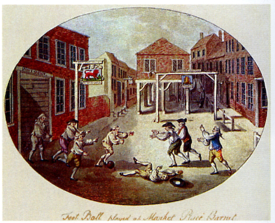

A modern labdarúgás
A mai értelemben vett labdarúgás az 1820-as években az angol diákok körében virágzott fel. A korábbiaktól annyiban mindenképp eltért, hogy tiltották a túlzott durvaságot, meghatározták a pálya nagyságát és a résztvevők számát. 1857-ben alapították meg az első amatőr futballegyesületet, az FC Sheffieldet. Egy általánosan elfogadott szabályrendszer kidolgozásár végül 1862-ben került sor, majd 1863-ban az iskolák és a társadalmi egyesületek létrehozták a Football Associationt. A legfontosabb szabályok közül néhány: 1. Gólnak számít, ha a labdát a kapuba juttatják anélkül, hogy kézben vitték vagy kézzel ütötték volna. 3. Lábbal csak a labdát szabad rúgni. 4. A játékosnak nem szabad a labdát érintenie, ha az a levegőben van. 8. Lesen van a játékos, mihelyt a labda elé kerül.
A labdarúgás szabályai
- A pálya méretei: Hosszúság: 100-110 m, Szélesség: 64-75 m
- Játékidő: 2 x 45 perc, félidők között a pihenő nem lehet több 15 percnél.
- A játékosok száma 10 + 1. A mérkőzés nem kezdhető el csapatonként 7 játékosnál kevesebbel. Nevezhető 16 ill. 18 játékos
- A játékos kötelező alapfelszerelése: mez vagy ing, rövidnadrág - ha termo nadrágot visel, akkor annak az alapszíne megegyezik a rövidnadrágéval, sportszár, sípcsontvédő, cipő. A mérkőzés folyamán nem lehet órát, nyakláncot, gyűrűt, fülbevalót stb. viselni. Fülbevalót és gyűrűt még leragasztva sem.
- Les: A leshelyzet önmagában nem szabálytalanság. Lesnek minősül, ha a játékvezető véleménye szerint a támadásban aktívan részt vevő játékos csapattársától úgy kapja meg a labdát, hogy az átadás pillanatában közelebb van az ellenfél alapvonalához, mint a labda és az utolsó előtti védőjátékos. Fontos tudni, hogy a kapus is védőjátékosnak számít. Les csak akkor lehet, ha a támadó játékos az ellenfél térfelén tartózkodik.
- Bedobás: arccal a játéktér fel kell fordulnia, mindkét lábának egy részével érintenie kell vagy az oldalvonalat, vagy a játéktéren kívül a talajt, mindkét kezét használnia kell, a labdát feje mögött és felett előrehozva kell bedobnia. A dobó játékos nem érintheti ismét a labdát, amíg a játékszert, más játékost nem érintett.